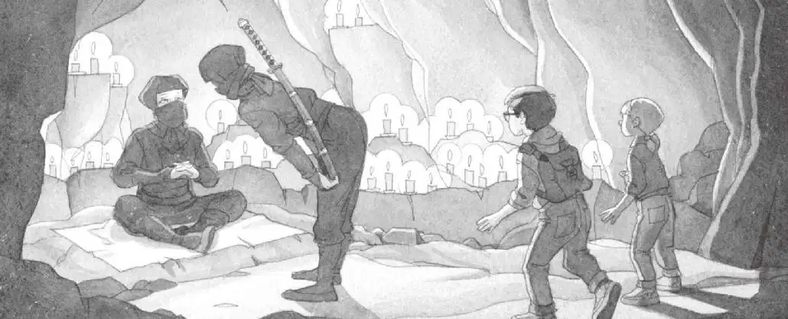

杰克和安妮走进了山洞，跟着两名忍者在黑暗中穿行。
山洞的深处点着几十支蜡烛。烛光的影子在墙壁上跳动。
在摇曳的烛光中，杰克看见一个黑乎乎的身影坐在蒲团上。
真的是忍者大师。

矮个子忍者朝忍者大师鞠了一躬，然后退到一边。
忍者大师仔细端详着杰克和安妮。
“坐。”他说。
杰克和安妮席地而坐，地面冷冰冰、硬邦邦的。
“吱吱。”
小老鼠把脑袋从安妮的口袋里探了出来。
“没事儿，花生米。”安妮说。
忍者大师仔细看了看小老鼠，又看了看杰克，问道：“你们是谁？”
“我是杰克，这是我的妹妹安妮。”杰克回答。
“你们从哪儿来？”忍者大师问。
“宾夕法尼亚州的蛙溪。”安妮回答。
“为什么来这里？”忍者大师问。
“我们想帮助我们的朋友仙女摩根。”杰克说，“她给我们留了字条。”
安妮指着矮个子忍者说：“我们把字条给了那个男人。”
“你应该说把字条给了那个女人。”忍者大师说，“她已经把字条交给我了。”
“女人？”杰克和安妮异口同声地说。
矮个子忍者的眼睛此刻闪闪发亮。杰克猜想她脸上可能露出了笑意。
忍者大师举起仙女摩根的那张字条。
“也许我可以帮助你们。”忍者大师说道，“可是，你们首先必须证明你们有资格得到我的帮助。”
就在这时，高个子忍者出现了，他朝忍者大师做了个手势。
忍者大师站了起来，把仙女摩根的字条递给安妮。
“我们现在必须离开，”他说，“武士逼近了。”
“武士？”杰克说。他知道武士是凶狠的日本士兵。
“是山谷里的那些人吗？”杰克问，“就是拿着火把的那些？”
“是的，我们的家族在跟他们作战。”忍者大师说，“趁他们还没有发现，我们得马上离开。”
“可是，帮助仙女摩根的事情怎么办呢？”安妮说。
忍者大师把刀佩带在身上。
“我现在没有时间，”他说，“我必须立刻动身。”
“我们可以和你们一起去吗？”安妮问。
“不行，我们要去的地方，没有你们的位置。你们赶紧原路返回，找到你们在树林里的屋子。”忍者大师说。
“就我们自己吗？”杰克问。
“对，你们必须自己返回。记住，一定要警惕那些武士。”忍者大师说。
“为什么？”杰克问。
“他们肯定认为我们是一伙儿的。”忍者大师说，“他们不会问你们问题，但也绝不会对你们心慈手软。”
“天哪！”安妮轻声叫道。
“不过，你们已经见识了忍者的功夫，现在你们自己可以练习一下。”忍者大师说。
“怎……怎么练习？”杰克问。
“记住三点。”忍者大师说。
“哪三点？”杰克问。
“利用自然，回归自然，跟随自然。”忍者大师说。
“我能做到！”安妮说。
杰克怀疑地看了看安妮，问：“真的？”
忍者大师转向杰克，说：“你们的树屋在东边，你们必须朝那个方向走。”
“怎么走呢？”杰克暗自疑惑，“我们怎么能找到东边呢？”
还没等他开口询问，忍者大师就鞠了一躬，从阴影里消失了。
两名忍者领着杰克和安妮走出山洞，来到月光下。
高个子忍者指了指那片松树林，然后便和矮个子忍者一起闪入暗处不见了。
此刻，只剩下杰克和安妮两个人。